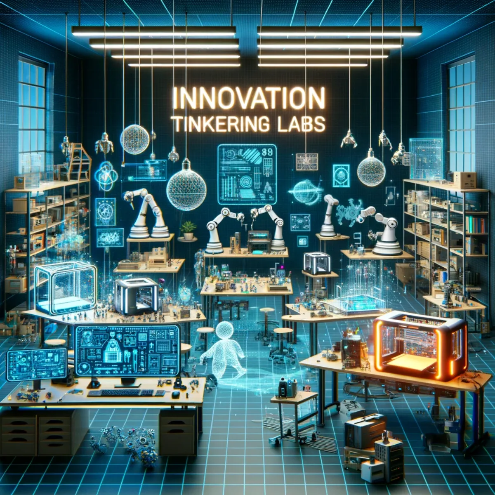

A home base
A stable employment relationship and a team to return to, where the actual arrangement supports it.

04 / Human capability
Try Everything Once and Intermittent Retirement connect stable participation with the freedom to learn across sectors, change direction, travel, care and rest.
Explore, compare, question. Luke's proposed architecture, source records and bounded tools. No purchase, sign-up or agreement is required.
Public proposalLuke's workforce proposal connects experience across care, food, energy, logistics, repair, coding, creative production and civic activity. The invitation is not to make everyone an expert in everything. Some people will keep a profession they love; others may discover one by trying several. Existing specialists remain essential to teaching and safe practice.
A stable employment relationship and a team to return to, where the actual arrangement supports it.
Paid, supervised placements and learning with responsibilities suited to the participant's competence.
A pathway into another role, a return to the original one, entrepreneurship or an agreed period away.
Source trail: P03 · P4A D01 · Oceania Health and AI Surge Plan
The proposal treats rest, family, recovery, learning and travel as legitimate phases throughout life. Funded time away depends on income, coverage and an agreed arrangement. Minutes saved by software are not automatically cash savings or a leave entitlement. The work-and-life planner below sketches preferences, not approved rosters or benefits.
Source trail: P03 · P4A D01 · Oceania Health and AI Surge Plan
Sketch preferences, not an approved employment arrangement. Save only when you choose, or download a Markdown copy to keep elsewhere.
The proposed cooperative could coordinate learning records, mentors, host organisations, equipment, paid release, handovers and return pathways. A person's private interests and health history need not become a shared employer dossier. Information relevant to a role can remain separate from the person's deeper Aura.
Source trail: D03 · A Fair Go for the AI Age P02 · Aura of Intelligence
A proposed placement needs an actual arrangement for supervision, pay, insurance, responsibilities and continuity of entitlements. A community contribution receipt is not a substitute for wages. The Fair Work source is a starting point for transfer-of-business questions, not an automatic legal solution for this proposed network.
Source trail: S06 · Fair Work Ombudsman: When businesses change owners D05 · Fiji-Australia Vuvale Union Submission